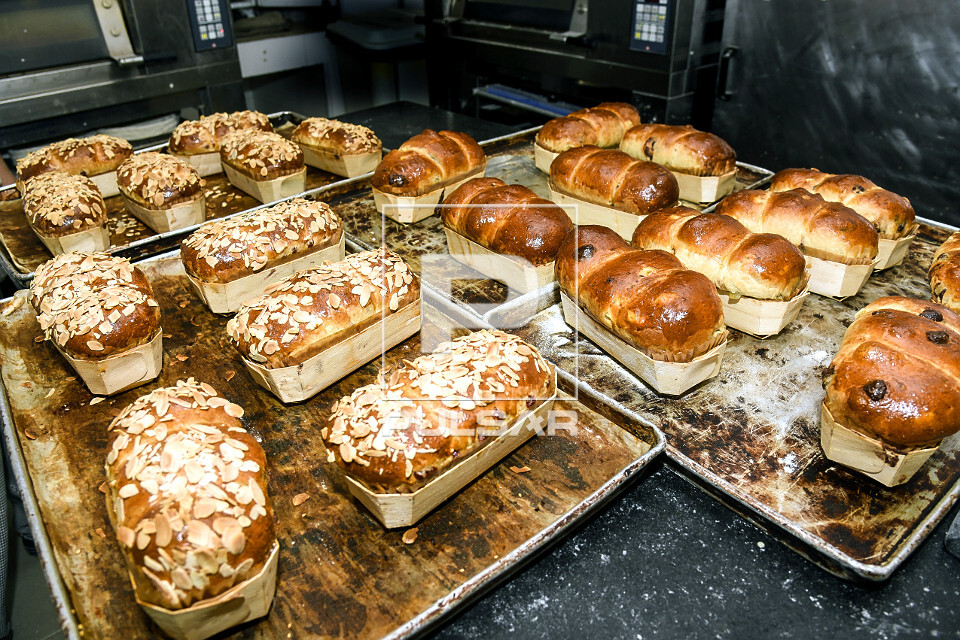
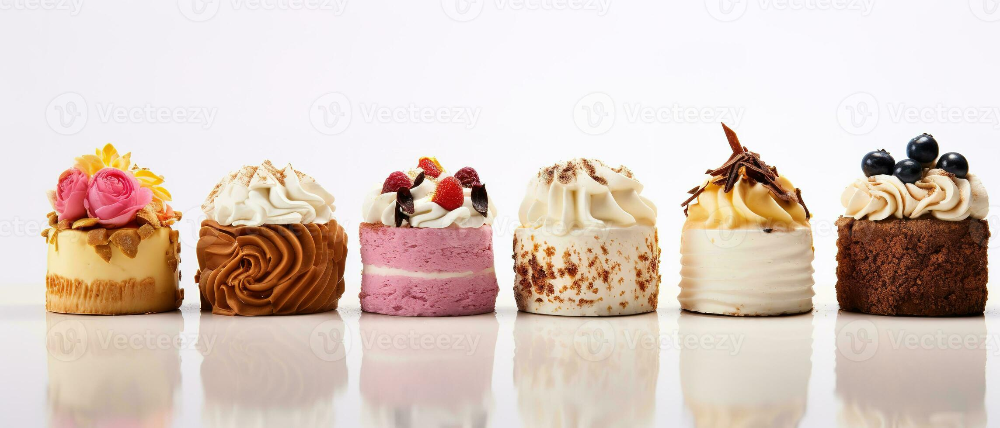

Temos um processo de fabricação 100% caseiro. Este foi um dos maiores motivos que fizeram com que a Padaria Plus crescesse com as proporções que temos hoje. Temos um pão da pura qualidade
Uma viagem para a Italia nos fez conhecer alguns ingredientes que são essenciais para que a massa do bolo fique macia e gostosa, Hoje temos um produto incomparavel.
Estamos localizados na Avenida Santos Agoz N°456
Nosso telefone: (99) 99999-9999
Estamos funcionando nos seguintes horários:
segunda à sexta: 7h às 16h
sábados e domingos: 7h às 13h
Feriados: 8h às 12h